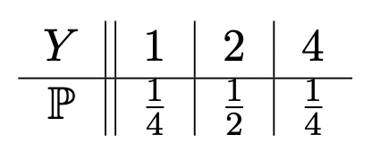
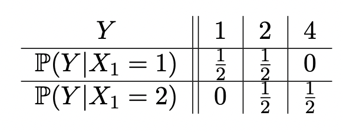

Probability Review
Before we start, we first need to review some fundamental definitions in probability:
- Random Variables: Essentially described as a variable that takes on its value by chance, typically denoted by capital letters such as $X$, $Y$, or $Z$, with their lower-case counterparts being used to denote real numbers (eg. $x$, $y$, or $z$). Several examples below describe how random variables can take on their values in a given situation:
- Dice roll: $X_0\sim \text{Unif}\left(\{1,2,3,4,5,6\}\right)$
- Coin flip: $X_1\sim \text{Unif}\left(\{\text{H}, \text{T}\}\right)$
- Sample from a Continuous Distribution: $X_2\sim \exp(1)$, in this case an exponential of rate 1 and state space $\mathbb{R}$.
- Events: The expression $\{X\leq x\}$ is the event that a random variable $X$ assumes a value that is less than or equal to the real number $x$. The event may or may not occur, depending on the outcome of the experiment or phenomenon that determines the value for the random variable $X$. The probability that the event occurs is written as $\mathbb{P}(X\leq x)$. For our examples above, we can write the probability of certain events occurring as:
- Rolling an odd number: $\mathbb{P}\left(X_0\in \{1,3,5\}\right)=\frac 16 \left|\{1,3,5\}\right|$
- Flipping tails: $\mathbb{P}\left(X_1=\text{T}\right)=\frac 12$
- Random variable is in interval $[a,b]$: $\mathbb{P}\left(X_2\in [a,b]\right)=\int_a^b e^{-x}dx$, with $0< a< b$.
- Independence: If you have events (i.e a subset of the space state), and you call them $A_1$, $A_2,\dots,A_n$, you would say these events are independent if for every $k\in \mathbb{Z}$ in $1\leq k\leq n$ and any collection $I\subset \{1,2,\dots,n\}$ then: $$\mathbb{P}\left(\bigcap_{j\in I}A_j\right)=\prod_{j\in I}\mathbb{P}\left(A_j\right)$$
For random variables $X_1,X_2,\dots,X_n$ taking values in the space state, call them $S_1,S_2,\dots,S_n$, and if for any $E_1\subseteq S_1$, $E_2\subseteq S_2,\dots,E_n\subseteq S_n$, then we can say that events $A_j=\{X_i\in E_j\}$ for $1\leq j\leq n$ are independent.
Problem 1
Coin Flips: Suppose we have a fair coin, and we flip it repeatedly. Let \(X_1, X_2,\) and \(X_3\) be outcomes of these coin flips. For each \(X_j\), the state space is \(\{\text{H}, \text{T}\}\). For each \(j\), it's clear that \(X_j \sim \text{Unif}\big(\{\text{H}, \text{T}\}\big)\). The random variables \(X_1, X_2, \dots, X_n\) are independent.
- Find \(\mathbb{P}\!\left(X_1=\text{H},\, X_2=\text{T}\right)\).
- \(A_1=\{X_1\neq X_2\}\), \(A_2=\{X_2\neq X_3\}\), and \(A_3=\{X_1\neq X_3\}\). What is \(\mathbb{P}(A_1)\)?
- What is \(\mathbb{P}(A_1 \cap A_2)\)? Are \(A_1\) and \(A_2\) independent? Is \(\{A_1, A_2, A_3\}\) independent?
Solution
- We simply have: \begin{align*} \mathbb{P}(X_1=\text{H}, X_2=\text{T}) & = \mathbb{P}\left(\{X_1=\text{H}\}\cap\{X_2=\text{T}\}\right) & & \text{Notation} \\ & = \mathbb{P}\left(\{X_1=\text{H}\}\right)\mathbb{P}\left(\{X_2=\text{T}\}\right) & & \text{Independence} \\ & = \frac 12 \times \frac 12= \boxed{\frac 14} & & \text{Uniform Distribution} \end{align*}
- For $X_1\neq X_2$, we know that the coin identity for the first flip must be different from the second flip, i.e we must have $(\text{H}, \text{T})$, or $(\text{T}, \text{H})$. From this, we can see that there are only four possible outcomes for this: $\text{HT}$, $\text{TH}$, $\text{TT}$, or $\text{HH}$. As such we have: $$\mathbb{P}(A_1)=\frac 14 \left|\{(\text{H} \text{T}), (\text{T} \text{H}) \}\right|=\frac 24=\boxed{\frac 12}$$
- For $A_1\cap A_2$, we require that $X_1\neq X_2$ (first toss is not equal to the second toss) AND that $X_2\neq X_3$ (second toss is not equal to the third toss). The only sequences of heads and tails that satisfy this is $\text{HTH}$ and $\text{THT}$. For three total tosses, there are $2^3=8$ total outcomes. As such, we have: $$\mathbb{P}(A_1\cap A_2)=\frac 18 \left|\{(\text{HTH}), (\text{THT})\}\right|=\boxed{\frac 14}$$
Which is exactly equal to $\mathbb{P}(A_1)\times \mathbb{P}(A_2)$, hence $A_1$ and $A_2$ are independent. $\{A_1,A_2,A_3\}$ is not independent, since we would require tossing the coin three times yield different identities, which is impossible (it can only be either heads of tails). So we have:
$$\mathbb{P}\left(\bigcap_{j=1}^2 A_j\right)=0\neq \mathbb{P}(A_1)\mathbb{P}(A_2)\mathbb{P}(A_3)$$- Conditioning: This is the process of changing the probability space by adding information. For events $A$ and $B$ with $\mathbb{P}(B)>0$, then: $$\mathbb{P}(A|B)=\frac{\mathbb{P}(A\cap B)}{\mathbb{P}(B)}$$ And if $A$ and $B$ are independent: $\mathbb{P}(A|B)=P(A)$.
We can also say this can act as function. It takes as inputs values for $A$ and outputs the value of the conditional probability.
$$A\longmapsto \mathbb{P}(A|B)$$Problem 2
We are also able to condition on random variables. Let $X_1$ and $X_2$ be random independent variables from distribution $\text{Unif}(\{1,2\})$. Let $Y=X_1X_2$.
- What is the distribution of $Y$?
- What is the distribution of $Y$ conditioned on $X_1$.
Solution
- We have that $X_1$ and $X_2$ can be either 1 or 2, and $Y$ is there product. So clearly, the only possible values of $Y$ is 1 ($1\times 1$), 2 ($1\times 2$ or $2\times 1$), or $4$ ($2\times 2$). Thus, the distribution of $Y$ is: 
- If we fix $X_1$ to be either $1$ or $2$, the following gives the resulting distribution of $Y$ conditioned on $X_1$: 
It's also clear that we could write as a function in such a way, for instance:
$$\mathbb{P}(Y=1|X_1)=\begin{cases} \frac 12 & \text{if }X_1=1 \\ 0 & \text{if }X_1=2 \end{cases}$$Which is also a random variable, as it is dependent on values of $X_1$.
$\color{white}.\color{black}$
Problem 3
Consider a family who want to have 2 kids, that will either by a boy ($\text{B}$) or a girl ($\text{G}$), occuring each with probability $\frac 12$.
- What is the probability that the family will have two girls, given that the oldest child is a girl.
- What is the probability that the family will have two girls, given that they have at least one girl child.
- What is the probability that the family will have two girls, given that there is a girl child in their family named Lilly?
The probability that the family names their child Lilly is $\alpha\ll 1$, and assume no boy can be named Lilly. For this, you may need to recall Bayes Theorem:
$$\mathbb{P}(A|B)=\frac{\mathbb{P}(B|A)\mathbb{P}(A)}{\mathbb{P}(B)}$$Solution
- Here, we use the definition of conditional probability to find $\mathbb{P}(GG|(\cdot,G))$. First, we define the possible outcomes where the oldest child is a girl, call it $A$, as: $$A=\{BG, GG\}$$
- In this case, the possible outcomes of having two children with at least one of them being a girl is: $$A=\{GG, BG, GB\}$$
- Define $L=$event where at least one child is named Lilly. Then using Baye's rule: $$\mathbb{P}(GG|L)=\frac{\mathbb{P}(L|GG)\mathbb{P}(GG)}{\mathbb{P}(L)}$$
Note that there are $2^2=4$ possible gender combinations for two children. And so we compute:
$$\mathbb{P}(GG|A)=\frac{\mathbb{P}(GG\cap A)}{P(A)}=\frac{P(GG)}{P(A)}=\frac 14\bigg/\frac 12=\boxed{\frac 12}$$And so:
$$\mathbb{P}(GG|A)=\frac{\mathbb{P}(GG\cap A)}{\mathbb{P}(A)}=\frac{\mathbb{P}(GG)}{\mathbb{P}(A)}=\frac 14\bigg/\frac 34=\boxed{\frac 13}$$Now let's look at each factor. $\mathbb{P}(L|GG)$ is the probability that at least one child is named Lilly given that they have two girls. We simply have to sum the probabilities for each case: one where both girls are named Lilly, and the other where only one is named Lilly, and the other is not:
$$\mathbb{P}(L|GG)=\alpha^2+2(1-\alpha)\alpha=\alpha^2+2\alpha-2\alpha^2=2\alpha-\alpha^2$$Now, for $\mathbb{P}(L)$, we can use the Law of Total Probability which states that for s sample space $\Omega=\bigcup_kB_k$ for disjoint sets $B_i\cap B_j=\emptyset$ $\forall\;i\neq j$, then:
$$\mathbb{P}(A)=\sum_k \mathbb{P}(A|B_k)\mathbb{P}(B_k)$$And so for our example:
\begin{align*} \mathbb{P}(L) & = \mathbb{P}(L|GG)\mathbb{P}(GG)+\mathbb{P}(L|BG)\mathbb{P}(BG)+\mathbb{P}(L|GB)\mathbb{P}(BG)+\underbrace{\mathbb{P}(L|BB)}_{=0}\mathbb{P}(BB) \\ & = (2\alpha-\alpha^2)\cdot\frac 14+(\alpha)\cdot\frac 14+(\alpha)\cdot\frac 14 \\ & = \frac 14 (4\alpha-\alpha^2) \end{align*}And so plugging all of this back into Bayes Theorem:
$$\mathbb{P}(GG|L)=\frac{\mathbb{P}(L|GG)\mathbb{P}(GG)}{\mathbb{P}(L)}=\frac{(2\alpha-\alpha^2)\left(\frac 14\right)}{\frac 14(4\alpha-\alpha^2)}=\boxed{\frac{2-\alpha}{4-\alpha}}$$Of course, for $\alpha$ small, this probability will approach $\frac 12$.
$\color{white}.\color{black}$
Problem 4
Say we flip a coin where $\mathbb{P}(H)=\frac 12$, and we record all of the coin flips (for instance $HHTH$). You play a game where if you flip two heads in a row ($HH$), you win. You lose if you flip two tails in a row ($TT$). Note that $\mathbb{P}(T)=q=1-p$
- What is the probability that you win the game?
- Say instead you win if you flip a heads followed by a tails ($HT$) (you still lose if you flip two tails in a row). What is the probability that you will win this game?
Solution
- We enumerate over all of the possible scenarios when we win: $$\text{Win}=\{HH, HTHH, HTHTHH,\cdots\}\cup\{THH, THTHH, \cdots\}$$
- In this case, we enumerate over all possible scenarios when we win: $$\text{Win}=\{HT, HHT, HHHT, \cdots\}\cup\{THT, THHT, \cdots\}$$
And so we have:
\begin{align*} \mathbb{P}(\text{Win}) & =p^2+p^3q+p^4q+\cdots+p^2q+p^3q^2+\cdots \\ & = p^2(1+q)\underbrace{\left(1+pq+(pq)^2+\cdots\right)}_{\text{Geometric Series}} \\ & = \boxed{p^2(1-q)\left(\frac{1}{1-pq}\right)} \end{align*}And so we have:
\begin{align*} \mathbb{P}(\text{Win}) & = pq+p^2q+p^3q+\cdots+pq^2+p^2q^2+\cdots \\ & = (1+q)\left(pq+p^2q+p^3q+\cdots\right) \\ & = pq(1+q)\left(1+p+p^2+\cdots\right) \\ & = \boxed{pq(1+q)\left(\frac{1}{1-p}\right)} \end{align*}What's interesting is if this was a fair coin, where $p=q=\frac 12$, the chance of winning in part (a) is $0.5$, whereas the chance of winning in part (b) is $0.75$.
- Conditional Expectation: Suppose $Y$ is a random variable taking finitely many values, with $B$ being an event with $\mathbb{P}(B)>0$, then: $$\mathbb{E}(Y|B)=\sum_y y\mathbb{P}(Y=y|B)$$
With the sum over all possible values. And for a random variable $X$, we have:
$$\mathbb{E}(Y|X)=\sum_y yP(Y=y|X)$$Problem 5
Recall our last example problem: Let $X_1$ and $X_2$ be random independent variables from $\text{Unif}(\{1,2\})$. Let $Y=X_1X_2$. Find $\mathbb{E}(Y|X_1)$.
Solution
We compute:
$$\mathbb{E}(Y|X_1)=\mathbb{E}(X_1X_2|X_1)=X_1\left(\frac 12 \cdot 1+\frac 12 \cdot 2\right)=\boxed{\frac 32 X_1}$$We can do the above since $X_1$ and $X_2$ are independent, and given that $X_1$ is true, we hold it fixed, and simply compute the expectation of $X_2$ sampling from $\text{Unif}(\{1,2\})$ with equal probability (in this case $\frac 12$).
In a more explicit approach, we can simply apply the formula presented above:
$$\mathbb{E}(Y|X_1)=1\cdot \mathbb{P}(Y=1|X_1)+2\cdot\mathbb{P}(Y=2|X_1)+4\cdot\mathbb{P}(Y=4|X_1)$$If $X_1=1$, using the distribution we constructed in the previous problem:
$$\mathbb{E}(Y|X_1)=1\cdot\frac 12+2\cdot\frac 12=\frac{1+2}{2}=1\cdot\frac 32=\boxed{\frac 32 X_2}$$If $X_1=2$, we find that:
$$\mathbb{E}(Y|X_1)=2\cdot\frac 12+4\cdot\frac 12=\frac{2+4}{2}=2\cdot\frac 32=\boxed{\frac 32 X_1}$$Properties of Conditional Expectation:
- (Linearity) For constants $a$ and $b$ and random variables $X$, $Y$, and $Z$: $$\mathbb{E}(aY+bZ|X=x)=a\mathbb{E}(Y|X=x)+b\mathbb{E}(Z|X=x)$$
- If $g$ is a function: $$E(g(Y)|X=x)=\begin{cases} \sum_y g(y)\mathbb{P}(Y=y|X=x) & \text{Discrete} \\ \int_{-\infty}^{\infty} g(y)f_{Y|X}(y|x)dy & \text{Continuous} \end{cases}$$
- (Independence) If $X$ and $Y$ are independent: $$\mathbb{E}(Y|X=x)=\mathbb{E}(Y)$$
- If $Y=g(X)$ is a function of $X$: $$\mathbb{E}(Y|X=x)=g(x)$$
Problem 6
Consider random variables $X$, $Y$, and $U$, where $U$ is uniformly distributed on $(0,1)$. Find the conditional expectation:
$$\mathbb{E}\left(UX^2+(1-U)Y^2|U=u\right)$$Solution
By linearity of conditional expectation:
\begin{align*} \mathbb{E}\left(UX^2+(1-U)Y^2|U=u\right) & =\mathbb{E}\left(uX^2+(1-u)Y^2|U=u\right) \\ & = u\mathbb{E}(X^2|U=u)+(1-u)\mathbb{E}(Y^2|U=u) \end{align*}If $X$ and $Y$ are also independent of $U$, then we have:
$$\boxed{u\mathbb{E}(X^2)+(1-u)\mathbb{E}(Y^2)}$$Let $Y$ be a random variable. Let $A_1,\dots,A_k$ be a sequence of events that partition the sample space. Then:
$$\mathbb{E}(Y)=\sum_{i=1}^k \mathbb{E}(Y|A_i)\mathbb{P}(A_i)$$If $X$ and $Y$ are jointly distributed random variables:
$$\mathbb{E}(Y)=\sum_x \mathbb{E}(Y|X=x)\mathbb{P}(X=x)$$Problem 7
A fair coin is flipped repeatedly. Find the expected number of flips needed to get two heads in a row.
Solution
Define $Y$ as the number of flips needed. Consider three events:
- $\text{T}$: The first flip is tails.
- $\text{HT}$: The first flip is heads, the second flip is tails.
- $\text{HH}$: The first two flips are heads.
These three events partition the sample space. By the expectation law above:
\begin{align*} \mathbb{E}(Y) & =\mathbb{E}(Y|T)\mathbb{P}(T)+\mathbb{E}(Y|HT)\mathbb{P}(HT)+\mathbb{E}(Y|HH)\mathbb{P}(HH) \\ & = \mathbb{E}(Y|T)\cdot\frac 12+\mathbb{E}(Y|HT)\cdot\frac 14+\mathbb{E}(Y|HH)\cdot\frac 14 \end{align*}Let's start with $\mathbb{E}(Y|HH)$. Here, we have already flipped two heads in our first two coin flips. So the expected number of flips given that we already flipped two heads in a row is simply 2.
For $\mathbb{E}(Y|T)$, we assume that the first flip is tails. Since successive flips are independent, after the first tails, we \textit{start over} waiting for two heads in a row. Since one flip has been used, it follows that $\mathbb{E}(Y|T)=1+\mathbb{E}(Y).$
Similarly for $\mathbb{E}(Y|HT)$, we've used two flips, and we start over waiting for two heads, so we have: $\mathbb{E}(Y|HT)=2+\mathbb{E}(Y)$.
$$\mathbb{E}(Y)=(1+\mathbb{E}(Y))\cdot\frac 12+(2+\mathbb{E}(Y))\cdot\frac 14+(2)\cdot\frac 14$$ $$\mathbb{E}(Y)\cdot\frac 14 = \frac 32\Longleftrightarrow \boxed{\mathbb{E}(Y)=6}$$Law of Total Expectation:
For random variables $X$ and $Y$:
$$\mathbb{E}(Y)=\mathbb{E}\left(\mathbb{E}[Y|X]\right)$$Or:
$$\mathbb{E}(\mathbb{P}(Y\in A|X))=\mathbb{P}(Y\in A)$$Proof:
\begin{align*} \mathbb{E}\left(\mathbb{E}(Y|X)\right) & = \sum_x\mathbb{E}(Y|X=x)\mathbb{P}(X=x) \\ & = \sum_x\left(\sum_y y\mathbb{P}(Y=y|X=x)\right)\mathbb{P}(X=x) \\ & = \sum_y y\sum_x \mathbb{P}(Y=y|X=x)\mathbb{P}(X=x) \\ & = \sum_y y\sum_x\mathbb{P}(X=x,Y=y) \\ & = \sum_y y\mathbb{P}(Y=y)=\mathbb{E}(y) \end{align*}Law of Total Conditional Expectation:
If you have three random variables, $X$, $Y$, and $Z$ such that:
$$\mathbb{E}[Z|X,Y]=\mathbb{E}[Z|X=s_1, Y=s_2]$$If $X=s_1$ and $Y=s_2$, and:
$$\mathbb{P}(Z\in A|X,Y)=\mathbb{P}(Z\in A|X=s_1, Y=s_2)$$Then:
$$\mathbb{E}(\mathbb{E}(Z|X,Y)|X)=\mathbb{E}(Z|X)$$ $$\mathbb{E}(\mathbb{P}(Z\in A|X,Y)|X)=\mathbb{P}(Z\in A|X)$$If $X,Y$ are independent, then $\mathbb{E}(Y|X)=\mathbb{E}(Y)$, since the outcome of $X$ has no effect on the outcome of $Y$. Similarly, $\mathbb{P}(Y\in A|X)=\mathbb{P}(Y\in A)$.
Problem 8
Let $X_1$, $X_2$, and $X_3$ be independent random variables distributed on $\text{Unif}(\{1,2\})$ with $Z=X_1X_2(-1)^{X_3}$, and $W=X_1X_2X_3$.
- What is $\mathbb{E}(Z|X_1,X_2)$?
- What is $\mathbb{E}(Z|X_1,X_2,X_3)$?
- What is $\mathbb{E}(Z)$?
- What is $\mathbb{E}(W|X_1,X_2)$?
- What is $\mathbb{E}(W|X_1)$?
Solution
- We have: $$\mathbb{E}(Z|X_1,X_2)=\mathbb{E}\left(X_1X_2(-1)^{X_3}|X_1, X_2\right)$$
- Since we are conditioning on all three variables, they are all known, and so this simply reduces to: $$\mathbb{E}(Z|X_1,X_2,X_3)=\boxed{Z}$$
- Using the law of total expectation: $$\mathbb{E}(Z)=\mathbb{E}(\mathbb{E}(Z|X_1,X_2))=\mathbb{E}(0)=0$$
- We have: \begin{align*} \mathbb{E}(W|X_1,X_2) & =\mathbb{E}(X_1X_2X_3|X_1,X_2) \\ & =X_1X_2\mathbb{E}(X_3|X_1X_2) \\ & = X_1X_2\mathbb{E}(X_3) \\ & = X_1X_2\left(1\cdot\mathbb{P}(X_3=1)+2\cdot\mathbb{P}(X_3=2)\right) \\ & = X_1X_2\left(1\cdot\frac 12 +2\cdot\frac 12\right) \\ & = \boxed{\frac 32 X_1X_2} \end{align*}
- We have: \begin{align*} \mathbb{E}(W|X_1) & = \mathbb{E}\left(\mathbb{E}(W|X_1,X_2)|X_1\right) & \;\;\;\text{(Law of Total Conditional Expectation)} \\ & = \mathbb{E}\left(\frac 32 X_1X_2|X_1\right) & \;\;\;\text{(By our answer in part (d))} \\ & = \frac 32 X_1\mathbb{E}(X_2|X_1) \\ & = \frac 32 X_1\mathbb{E}(X_2) \\ & =\boxed{\left(\frac 32\right)^2X_1} & \text{(By our work in part (d))} \end{align*}
Since we're conditioning on $X_1$ and $X_2$, these values are known constants, and by linearity, we can take the product $X_1X_2$ out of the expectation:
$$=X_1X_2\mathbb{E}\left((-1)^{X_3}|X_1,X_2\right)=X_1X_2\mathbb{E}\left((-1)^{X_3}\right)$$Where we used the fact that $X_1$, $X_2$ are independent. We then use our expectation formula:
$$=X_1X_2\left[(-1)^1\mathbb{P}(X_3=1)+(-1)^2\mathbb{P}(X_3=2)\right]=X_1X_2\left(-1\cdot\frac 12+1\cdot\frac 12\right)=\boxed{0}$$Where we used our answer from part (a).